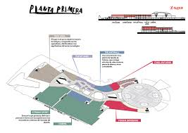
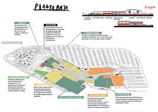
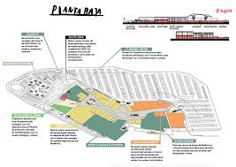

Horario: Lunes a domingo, de 10:00 a 22:00
Dirección: Calle Oslo, 53, 28922 Alcorcón, Madrid
Teléfono: 912 345 678
Email: info@x-madrid.es
Transporte: Metro línea 12, estación Parque Oeste. Líneas de autobús: 1, 2, 514.
Parking: Gratis 3h. 2000 plazas disponibles.
Servicios: Wifi gratuito, guardería, puntos de carga eléctrica, zonas de descanso, aseos adaptados, taquillas.
PLANOS:
 
